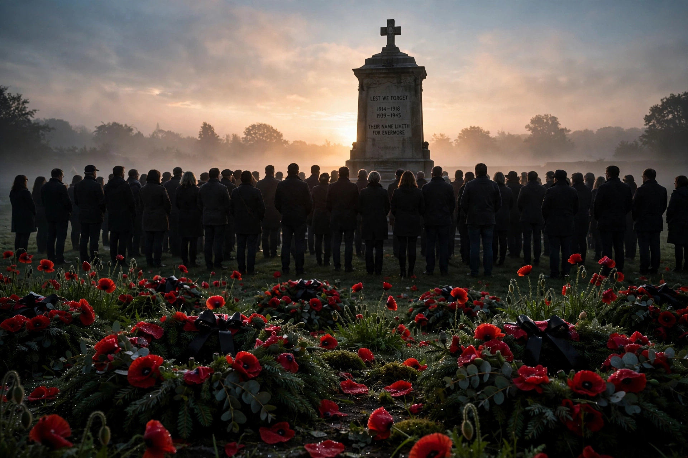

| Anzac Day | |
|---|---|
| Observed by | Australia, New Zealand |
| Date | 25 April |
| First observed | 1916 |
| Commemorates | Landing at Gallipoli, 25 April 1915; all who served |
| Related to | Remembrance Day |

Anzac Day is a national day of remembrance in Australia and New Zealand, observed on 25 April each year. It commemorates the landing of the Australian and New Zealand Army Corps (ANZAC) at Gallipoli during the First World War on 25 April 1915, and more broadly honours all Australians and New Zealanders who have served and died in wars, conflicts, and peacekeeping operations.
The first Anzac Day was observed in 1916, a year after the landing at Anzac Cove. The Gallipoli campaign, in which more than 8,700 Australians and 2,700 New Zealanders died, became a defining episode in both nations' identities. The day was gazetted as a public holiday in New Zealand in 1920 and became established across Australian states by the mid-1920s.
The day begins with dawn services, held at war memorials across both countries and at Gallipoli itself, reflecting the time of the original landing. Services include the laying of wreaths, the playing of the Last Post, a period of silence, and the recitation of the Ode of Remembrance from Laurence Binyon's poem "For the Fallen" — "They shall grow not old, as we that are left grow old..." Marches by returned service personnel follow later in the morning. The red poppy and sprigs of rosemary are worn as symbols of remembrance.
Associated traditions include the baking of Anzac biscuits — oat biscuits sent to soldiers during the First World War — and the game of two-up, traditionally played in pubs and clubs on Anzac Day. Commemorative addresses stress the "Anzac spirit" of endurance, mateship, and sacrifice.
Gallipoli campaign · Remembrance Day · World War I · Australian War Memorial